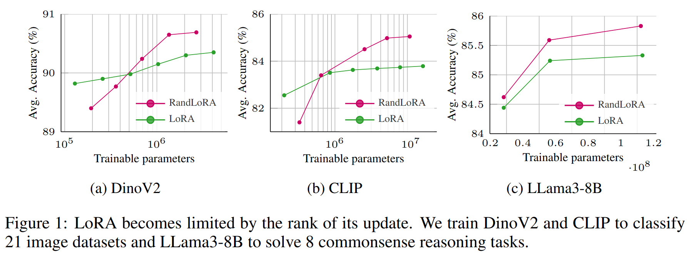

RandLoRA introduces a novel parameter-efficient fine-tuning method that achieves full-rank updates by learning linear combinations of low-rank random matrices, overcoming some limitations of standard Low-Rank Adaptation (LoRA).
This repository contains the official code for RandLoRA, including an unofficial integration with the Hugging Face PEFT and Transformers libraries.
Read the preprint to learn more about RandLoRA: Preprint
Low-Rank Adaptation (LoRA) and its variants have shown impressive results in reducing the number of trainable parameters and memory requirements of large transformer networks while maintaining fine-tuning performance. However, the low-rank nature of the weight update inherently limits the representation power of the fine-tuned model, potentially compromising performance on complex tasks. This raises a critical question: when a performance gap between LoRA and standard fine-tuning is observed, is it due to the reduced number of trainable parameters or the rank deficiency? This paper aims to answer this question by introducing RandLoRA, a parameter-efficient method that performs full-rank updates using a learned linear combinations of low-rank, non-trainable random matrices. Our method limits the number of trainable parameters by restricting optimization to diagonal scaling matrices applied to the fixed random matrices. This allows us to effectively overcome low-rank limitations while maintaining low parameter count and memory usage during training. Through extensive experimentation across vision, language, and vision-language benchmarks, we systematically evaluate the limitations of LoRA and existing random basis methods. Our findings reveal that full-rank updates are beneficial across vision and language tasks separately, but especially so for vision-language tasks, where RandLoRA significantly reduces—and sometimes eliminates—the performance gap between standard finetuning and LoRA, demonstrating its efficacy.
git clone https://github.com/PaulAlbert31/RandLoRA.git && cd RandLoRAconda create -n randlora_peft python=3.12 && conda activate randlora_peftconda install pytorch torchvision torchaudio pytorch-cuda=11.8 -c pytorch -c nvidia (adjust as needed)pip install transformers accelerateHere's a basic example of how you might use RandLoRA's PEFT integration:
import sys
import os
import torch
# --- Quick Start with RandLoRA ---
# 1. **Setup:** Ensure 'peft' and 'transformers' are accessible. Adjust paths if needed for local versions.
sys.path.append(os.path.join(os.getcwd(), "peft/src/"))
from peft import RandLoraConfig, get_peft_model, prepare_model_for_kbit_training
sys.path.append(os.path.join(os.getcwd(), "transformers"))
from transformers import AutoModelForCausalLM
# 2. **Configuration:** Define RandLoRA parameters and the base model.
seed = 1
rank = 30
load_4bit = False
base_model = 'meta-llama/Meta-Llama-3-8B'
config = RandLoraConfig(
r=rank,
randlora_alpha=2*rank,
randlora_dropout=0.05,
target_modules=["q_proj", "k_proj", "v_proj", "up_proj", "down_proj"],
bias="none",
task_type="CAUSAL_LM",
projection_prng_key=int(torch.exp(torch.tensor(seed))*3.1415*1000),
)
# 3. **Load Model:** Load the base model, optionally in 4-bit.
model = AutoModelForCausalLM.from_pretrained(
base_model,
load_in_4bit=load_4bit,
torch_dtype=torch.float16,
trust_remote_code=True,
)
# 4. **Prepare for 4-bit (Optional):** If using 4-bit, prepare for training.
if load_4bit:
model = prepare_model_for_kbit_training(model)
# 5. **Apply RandLoRA:** Add RandLoRA adapters to the model.
model.gradient_checkpointing_enable()
model = get_peft_model(model, config)
# 6. **Ready to Go:** The `model` is now configured with RandLoRA.
print(model)
If your work benefited from our research, please consider citing the paper.
@article{2024_ICLR_RandLoRA,
title={RandLoRA: full rank parameter-efficient fine-tuning of large models},
author={Albert, Paul and Zhang, Frederic Z and Rodriguez-Opazo, Cristian and Saratchandran, Hemanth and Hengel, Anton van den and Abbasnejad, Ehsan},
journal={International Conference on Learning Representations (ICLR)},
year={2024}
}